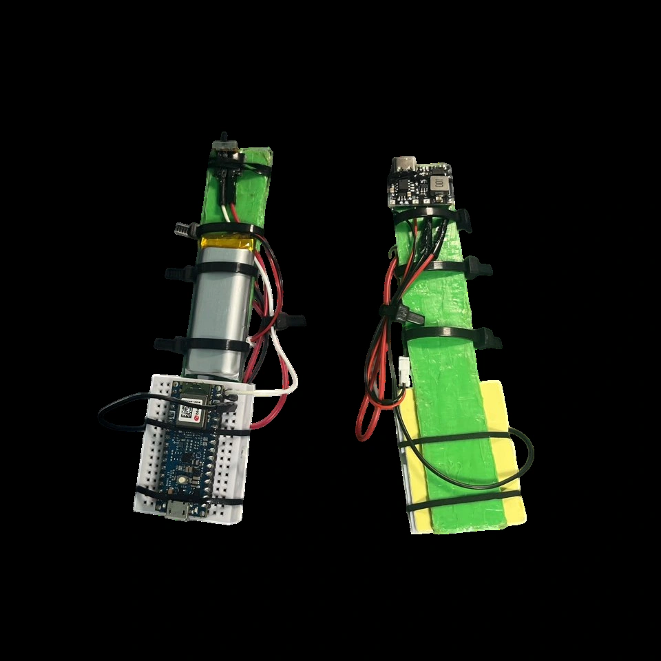

September–December 2025
Interactive Game System Development
Carrot Mart: Short-Term Horse Rider Wanted
Horse riding and lasso throwing through two handheld motion controllers.


Overview
I proposed the project to explore how a new input device could change the way a game is played. The controller and game were designed together: the left hand acts as a rein, while the right hand spins and throws a lasso.
Self-designed project in Sangmyung University’s Future Design Program. Teammates contributed game implementation and 3D assets; character-control integration was collaborative.
Game and controller demonstration
Input mapping
| Left · horse movement | Axis-specific gesturesBLE keyboard events: A/D, Shift, and a W→S sequence. |
|---|---|
| Right · lasso | Spin → sustain → throwBLE mouse events: right-button hold, left-click pulses, then release. |
Two battery-powered prototypes. Each combines a Nano 33 BLE Rev2, a LiPo battery, charging/boost circuitry and a power switch.
Controller interface
The firmware presents the controllers as a keyboard and mouse. This lets the game map motion events through its input system while keeping gesture detection in the devices.
Left-hand gesture detection
Week 9 tests recorded valid inputs alongside unwanted actions. The preserved firmware estimates and subtracts gravity, then uses the change in linear acceleration between samples. A gesture is accepted only when its main axis exceeds a threshold and the other axes remain below their limits.
- Cross-axis rejectionAvoid accepting a second action during a gesture.
- Hold time and cooldownControl how long a key stays pressed and when it can trigger again.
- Explicit key releaseRelease held inputs after a timeout or maximum hold duration.
Cross-axis check · exact excerpt from HorseControl_Test02.ino
const bool left_impulse = (j.x <= -JERK_X_LEFT_NEG);
const bool right_impulse = (j.x >= JERK_X_RIGHT_POS);
const bool cross_ok = (absf(j.z) <= JERK_CROSS_MAX) && (absf(j.y) <= JERK_CROSS_MAX);The variable is named “jerk” in the code, but it is a per-sample acceleration difference without division by elapsed time.
Right-hand gesture detection
A throw is recognized as a sequence rather than a single acceleration spike. The idle/spin state machine combines an acceleration peak with a subsequent drop in angular speed. Sustained rotation generates clicks that drive the game’s lasso interaction.
- SpinAngular speed crosses an adaptive threshold; hold the right mouse button.
- SustainGenerate left-click pulses while maintaining the right-button hold.
- ThrowRelease is enabled after at least 350 ms of spinning. Within 200 ms of an acceleration peak, a sufficient drop in angular speed can release the right button.
The release rule uses an angular-speed ratio below 0.35 of the value at the detected peak. A separate stop/timeout path also releases the button. These values describe the implementation; recognition accuracy was not measured.
Integration and troubleshooting
IMU initialization failed
The assumed board/sensor combination did not match the hardware. After identifying the board as a Nano 33 BLE Rev2, the BMI270/BMM150 library produced valid readings.
Power appeared normal until connected
An unloaded reading of 5 V concealed a damaged boost module. Measurement at the board and a 220 Ω load test identified the fault after a reversed connection.
Results and next steps
The completed game could be controlled through the two wireless prototypes. I developed the game concept, assembled the controllers, defined the motion-to-input mapping and worked on its integration. The testing records show input interference and the revisions used to address it; they do not establish a recognition-rate or latency result.
The project changed how actions entered the game. Its predominantly visual response prompted the next project: PGI’s fingertip feedback interface.
Code and resources
The team repository contains the Unreal game. My controller package contains two Arduino sketches, build instructions and a controller photograph.
Both preserved sketches were compiled during packaging. No new wireless hardware test was performed.